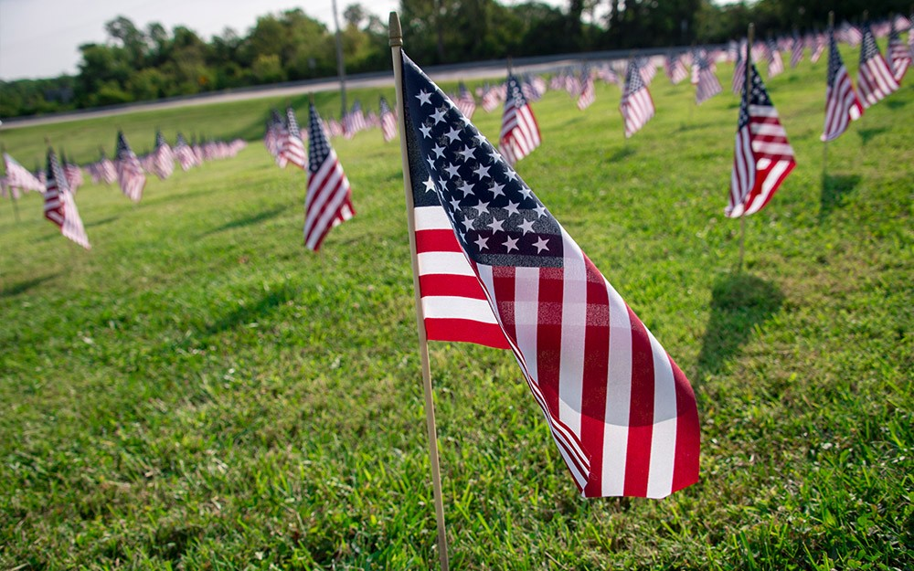

Wall of Honor
Updated 1 Aug 21.
The Following men all served in Alpha Company 3rd Reconnaissance Battalion. Forty-nine men were Killed in Action. Eight additional men were Killed In Action after leaving Alpha Co, and serving in another reconnaissance company, or other Marine unit. Those names are highlighted.
Alpha Company, killed in action
Choose a name for his hometown and his place on the Vietnam Memorial Wall.
- Killed in action after leaving Alpha Company for another unit
1st.Lt Frank S. Reasoner
1st.Lt Frank S. Reasoner
Killed in action12 July 1965
HometownKellogg, ID
Vietnam Memorial WallPanel 2E, line 36
His pageThe Reasoner Patrol
From the Wall of Honor table
LCpl. Ronald L. Longanecker
LCpl. Ronald L. Longanecker
Killed in action8 July 1966
HometownPortland, OR
Vietnam Memorial WallPanel 9E, line 7
His pageTeam Partyline and Ronald Longanecker
From the Wall of Honor table
Pfc. Theodore R. McElroy
Pfc. Theodore R. McElroy
Killed in action6 December 1966
HometownCleveland, OH
Vietnam Memorial WallPanel 13E, line 16
His page
From the Wall of Honor table
HM Robert L. Brown
HM Robert L. Brown
Killed in action26 January 1967
HometownEast Point, GA
Vietnam Memorial WallPanel 14E, line 79
His page
From the Wall of Honor table
Sgt. Howard H. Dean
Sgt. Howard H. Dean
Killed in action26 January 1967
HometownHarrodsburg, KY
Vietnam Memorial WallPanel 14E, line 79
His page
From the Wall of Honor table
1stLt. Richard W. Piatt
1stLt. Richard W. Piatt
Killed in action16 April 1967
HometownLos Angeles, CA
Vietnam Memorial WallPanel 18E, line 36
His page
From the Wall of Honor table
Cpl. Lindy R. Hall
Cpl. Lindy R. Hall
Killed in action26 April 1967
HometownTunkhannock, PA
Vietnam Memorial WallPanel 18E, line 93
Killed in action after leaving Alpha Company for another unit.
His page
From the Wall of Honor table
1stLt. Heinz Ahlmeyer Jr.
1stLt. Heinz Ahlmeyer Jr.
Killed in action10 May 1967
HometownPearl River, NY
Vietnam Memorial WallPanel 19E, line 77
His pageTeam Breaker and the return of its missing
From the Wall of Honor table
HM. Malcom T. Miller
HM. Malcom T. Miller
Killed in action10 May 1967
HometownTampa, FL
Vietnam Memorial WallPanel 19E, line 84
His pageTeam Breaker and the return of its missing
From the Wall of Honor table
LCpl. Samuel A. Sharp Jr.
LCpl. Samuel A. Sharp Jr.
Killed in action10 May 1967
HometownSan Jose, CA
Vietnam Memorial WallPanel 19E, line 86
His pageTeam Breaker and the return of its missing
From the Wall of Honor table
Sgt. James N. Tycz
Sgt. James N. Tycz
Killed in action10 May 1967
HometownMilwaukee, WI
Vietnam Memorial WallPanel 19E, line 88
His pageTeam Breaker and the return of its missing
From the Wall of Honor table
GySgt. Di R. Ibanez
GySgt. Di R. Ibanez
Killed in action5 June 1967
HometownSan Diego, CA
Vietnam Memorial WallPanel 21E, line 58
His pageGySgt. Di Reyes Ibanez
From the Wall of Honor table
Cpl. David F. Sherrell
Cpl. David F. Sherrell
Killed in action6 June 1967
HometownWoodland Hill, CA
Vietnam Memorial WallPanel 21E, line 63
His page
From the Wall of Honor table
Cpl. Dale L. Speir
Cpl. Dale L. Speir
Killed in action6 June 1967
HometownN. Baltimore, OH
Vietnam Memorial WallPanel 21E, line 63
His page
From the Wall of Honor table
Cpl. Howard H. Withey
Cpl. Howard H. Withey
Killed in action6 June 1967
HometownFayetteville, AR
Vietnam Memorial WallPanel 21E, line 64
His page
From the Wall of Honor table
Sgt. Jim E. Moshier
Sgt. Jim E. Moshier
Killed in action11 June 1967
HometownBakersfield, CA
Vietnam Memorial WallPanel 21E, line 91
Killed in action after leaving Alpha Company for another unit.
His page
From the Wall of Honor table
Cpl. Merlin R. Allen
Cpl. Merlin R. Allen
Killed in action30 June 1967
HometownBayfield, WI
Vietnam Memorial WallPanel 22E, line 86
His pageTeam Striker
From the Wall of Honor table
HM. Michael B. Judd
HM. Michael B. Judd
Killed in action30 June 1967
HometownCleveland, OH
Vietnam Memorial WallPanel 22E, line 88
His pageTeam Striker
From the Wall of Honor table
LCpl. John D. Killen, III
LCpl. John D. Killen, III
Killed in action30 June 1967
HometownDes Moines, IA
Vietnam Memorial WallPanel 22E, line 88
His pageTeam Striker
From the Wall of Honor table
Cpl. Glyn L. Runnels Jr.
Cpl. Glyn L. Runnels Jr.
Killed in action30 June 1967
HometownBirmingham, AL
Vietnam Memorial WallPanel 22E, line 88
His pageTeam Striker
From the Wall of Honor table
LCpl. Dennis M. Perry
LCpl. Dennis M. Perry
Killed in action2 July 1967
HometownPerry, GA
Vietnam Memorial WallPanel 22E, line 112
His page
From the Wall of Honor table
HM. James P. McGrath
HM. James P. McGrath
Killed in action3 August 1967
HometownChicago, IL
Vietnam Memorial WallPanel 24E, line 73
His pageRecon Team Partyline One
From the Wall of Honor table
LCpl. John B. Nahan III
LCpl. John B. Nahan III
Killed in action3 August 1967
HometownAllegan, MI
Vietnam Memorial WallPanel 24E, line 73
His pageRecon Team Partyline One
From the Wall of Honor table
LCpl. Jack Wolpe
LCpl. Jack Wolpe
Killed in action3 August 1967
HometownNewburgh, NY
Vietnam Memorial WallPanel 24E, line 75
His pageRecon Team Partyline One
From the Wall of Honor table
Sgt. Eugene Castaneda
Sgt. Eugene Castaneda
Killed in action12 August 1967
HometownHonokaa, HI
Vietnam Memorial WallPanel 24E, line 102
Killed in action after leaving Alpha Company for another unit.
His page
From the Wall of Honor table
Pfc. Donald B. Dray
Pfc. Donald B. Dray
Killed in action14 September 1967
HometownBuffalo, NY
Vietnam Memorial WallPanel 26E, line 73
His pageHM Gary R. Wilson
From the Wall of Honor table
HM. Gary R. Wilson
HM. Gary R. Wilson
Killed in action14 September 1967
HometownChicago Hts, IL
Vietnam Memorial WallPanel 26E, line 73
His pageHM Gary R. Wilson
From the Wall of Honor table
Sgt. Gene R. Phipps
Sgt. Gene R. Phipps
Killed in action28 December 1967
HometownGreensboro, NC
Vietnam Memorial WallPanel 32E, line 89
Killed in action after leaving Alpha Company for another unit.
His page
From the Wall of Honor table
Pfc. Terry A. Jones
Pfc. Terry A. Jones
Killed in action30 December 1967
HometownDetroit, MI
Vietnam Memorial WallPanel 33E, line 3
His page
From the Wall of Honor table
LCpl. Thomas J. Tingley
LCpl. Thomas J. Tingley
Killed in action30 December 1967
HometownFairfield, CT
Vietnam Memorial WallPanel 33E, line 5
His page
From the Wall of Honor table
LCpl. Gerald P. Gauthier
LCpl. Gerald P. Gauthier
Killed in action2 January 1968
HometownSt Martinville, LA
Vietnam Memorial WallPanel 33E, line 18
His page
From the Wall of Honor table
Pfc. Bruce R. Harris
Pfc. Bruce R. Harris
Killed in action2 January 1968
HometownColumbus, IN
Vietnam Memorial WallPanel 33E, line 18
His page
From the Wall of Honor table
Sgt. Francis G. Houdashelt
Sgt. Francis G. Houdashelt
Killed in action2 January 1968
HometownPensacola, FL
Vietnam Memorial WallPanel 33E, line 18
His page
From the Wall of Honor table
HM. David L. Jarvis
HM. David L. Jarvis
Killed in action2 January 1968
HometownJamesville, NY
Vietnam Memorial WallPanel 33E, line 19
His page
From the Wall of Honor table
Pfc. James W. Miller
Pfc. James W. Miller
Killed in action2 January 1968
HometownFridley, MN
Vietnam Memorial WallPanel 33E, line 20
His page
From the Wall of Honor table
Pfc. Terry D. Pitts
Pfc. Terry D. Pitts
Killed in action2 January 1968
HometownBakersfield, CA
Vietnam Memorial WallPanel 33E, line 21
His page
From the Wall of Honor table
Pfc. Keith D. Coon
Pfc. Keith D. Coon
Killed in action16 February 1968
HometownTopeka, KS
Vietnam Memorial WallPanel 39E, line 58
His page
From the Wall of Honor table
HM. Alexander Giejc
HM. Alexander Giejc
Killed in action16 February 1968
HometownMilwaukee, WI
Vietnam Memorial WallPanel 39E, line 59
His page
From the Wall of Honor table
Pfc. Thomas L. Little Sun
Pfc. Thomas L. Little Sun
Killed in action16 February 1968
HometownPawnee, OK
Vietnam Memorial WallPanel 39E, line 63
His page
From the Wall of Honor table
Capt. Alexander K. Ward
Capt. Alexander K. Ward
Killed in action16 February 1968
HometownAnnapolis, MD
Vietnam Memorial WallPanel 39E, line 68
Killed in action after leaving Alpha Company for another unit.
His page
From the Wall of Honor table
Pfc Robert W McGill
Pfc Robert W McGill
Killed in action24 August 1968
HometownDayton, OH
Vietnam Memorial WallPanel 46W, line 9
Killed in action after leaving Alpha Company for another unit.
His page
From the Wall of Honor table
Pfc. George V. Martinez
Pfc. George V. Martinez
Killed in action14 September 1968
HometownSan Francisco, CA
Vietnam Memorial WallPanel 44W, line 57
His page
From the Wall of Honor table
Pfc. John C. Brown
Pfc. John C. Brown
Killed in action27 November 1968
HometownDallas, TX
Vietnam Memorial WallPanel 38W, line 71
His page
From the Wall of Honor table
1stLt. Richard E. Latimer, Jr.
1stLt. Richard E. Latimer, Jr.
Killed in action2 December 1968
HometownTinker AFB, OK
Vietnam Memorial WallPanel 37W, line 23
Killed in action after leaving Alpha Company for another unit.
His page
From the Wall of Honor table
LCpl. Henry M. Hames Jr.
LCpl. Henry M. Hames Jr.
Killed in action5 December 1968
HometownPortland, OR
Vietnam Memorial WallPanel 37W, line 46
His page
From the Wall of Honor table
LCpl. Gerald G. McGinley
LCpl. Gerald G. McGinley
Killed in action28 December 1968
HometownConcord, CA
Vietnam Memorial WallPanel 36W, line 86
His page
From the Wall of Honor table
LCpl. Dennis E. Mickelson
LCpl. Dennis E. Mickelson
Killed in action28 December 1968
HometownEugene, OR
Vietnam Memorial WallPanel 36W, line 85
His page
From the Wall of Honor table
HM. Raymond C. Minks
HM. Raymond C. Minks
Killed in action16 January 1969
HometownRandolph AFB, TX
Vietnam Memorial WallPanel 34W, line 16
His page
From the Wall of Honor table
LCpl. Freddie P. Chavez
LCpl. Freddie P. Chavez
Killed in action10 March 1969
HometownAlbuqueque, NM
Vietnam Memorial WallPanel 30W, line 39
His page
From the Wall of Honor table
Sgt. Kenneth E. Gayer
Sgt. Kenneth E. Gayer
Killed in action10 March 1969
HometownFresno, CA
Vietnam Memorial WallPanel 30W, line 101
His page
From the Wall of Honor table
Cpl. Robert L. Scheidel Jr.
Cpl. Robert L. Scheidel Jr.
Killed in action11 April 1969
HometownCanton, CT
Vietnam Memorial WallPanel 27W, line 59
His page
From the Wall of Honor table
Cpl. George F. Landi
Cpl. George F. Landi
Killed in action8 June 1969
HometownNew York, NY
Vietnam Memorial WallPanel 23W, line 111
His pageAmerican Beauty
From the Wall of Honor table
1stLt. Ronald W. McLean
1stLt. Ronald W. McLean
Killed in action8 June 1969
HometownBeverly Hills, CA
Vietnam Memorial WallPanel 23W, line 113
His pageAmerican Beauty
From the Wall of Honor table
Pfc. Michael E. Hicks
Pfc. Michael E. Hicks
Killed in action11 June 1969
HometownSan Leandro, CA
Vietnam Memorial WallPanel 22W, line 21
His page
From the Wall of Honor table
Cpl. Ronald J. Bates
Cpl. Ronald J. Bates
Killed in action31 July 1969
HometownGlouchester City, NJ
Vietnam Memorial WallPanel 20W, line 79
His page
From the Wall of Honor table
Capt. Bernard A. McDermott III
Capt. Bernard A. McDermott III
Killed in action6 September 1969
HometownNashville, TN
Vietnam Memorial WallPanel 18W, line 49
Killed in action after leaving Alpha Company for another unit.
His page
From the Wall of Honor table
56 names, in the order of the table below. The roster marks 55 men as killed in action; this table lists 56. The two lists differ; About this site says how.
Scroll sideways for more columns.
| Date | Rank | Last Name | First | I. | Hometown | St | Panel | Line |
|---|---|---|---|---|---|---|---|---|
| 12-Jul-65 | 1st.Lt | Reasoner | Frank | S. | Kellogg | ID | 2E | 36 |
| 8-Jul-66 | LCpl. | Longanecker | Ronald | L. | Portland | OR | 9E | 7 |
| 6-Dec-66 | Pfc. | McElroy | Theodore | R. | Cleveland | OH | 13E | 16 |
| 26-Jan-67 | HM | Brown | Robert | L. | East Point | GA | 14E | 79 |
| 26-Jan-67 | Sgt. | Dean | Howard | H. | Harrodsburg | KY | 14E | 79 |
| 16-Apr-67 | 1stLt. | Piatt | Richard | W. | Los Angeles | CA | 18E | 36 |
| 26-Apr-67 | Cpl. | Hall | Lindy | R. | Tunkhannock | PA | 18E | 93 |
| 10-May-67 | 1stLt. | Ahlmeyer Jr. | Heinz | Pearl River | NY | 19E | 77 | |
| 10-May-67 | HM. | Miller | Malcom | T. | Tampa | FL | 19E | 84 |
| 10-May-67 | LCpl. | Sharp Jr. | Samuel | A. | San Jose | CA | 19E | 86 |
| 10-May-67 | Sgt. | Tycz | James | N. | Milwaukee | WI | 19E | 88 |
| 5-Jun-67 | GySgt. | Ibanez | Di | R. | San Diego | CA | 21E | 58 |
| 6-Jun-67 | Cpl. | Sherrell | David | F. | Woodland Hill | CA | 21E | 63 |
| 6-Jun-67 | Cpl. | Speir | Dale | L. | N. Baltimore | OH | 21E | 63 |
| 6-Jun-67 | Cpl. | Withey | Howard | H. | Fayetteville | AR | 21E | 64 |
| 11-Jun-67 | Sgt. | Moshier | Jim | E. | Bakersfield | CA | 21E | 91 |
| 30-Jun-67 | Cpl. | Allen | Merlin | R. | Bayfield | WI | 22E | 86 |
| 30-Jun-67 | HM. | Judd | Michael | B. | Cleveland | OH | 22E | 88 |
| 30-Jun-67 | LCpl. | Killen, III | John | D. | Des Moines | IA | 22E | 88 |
| 30-Jun-67 | Cpl. | Runnels Jr. | Glyn | L. | Birmingham | AL | 22E | 88 |
| 2-Jul-67 | LCpl. | Perry | Dennis | M. | Perry | GA | 22E | 112 |
| 3-Aug-67 | HM. | McGrath | James | P. | Chicago | IL | 24E | 73 |
| 3-Aug-67 | LCpl. | Nahan III | John | B. | Allegan | MI | 24E | 73 |
| 3-Aug-67 | LCpl. | Wolpe | Jack | Newburgh | NY | 24E | 75 | |
| 12-Aug-67 | Sgt. | Castaneda | Eugene | Honokaa | HI | 24E | 102 | |
| 14-Sep-67 | Pfc. | Dray | Donald | B. | Buffalo | NY | 26E | 73 |
| 14-Sep-67 | HM. | Wilson | Gary | R. | Chicago Hts | IL | 26E | 73 |
| 28-Dec-67 | Sgt. | Phipps | Gene | R. | Greensboro | NC | 32E | 89 |
| 30-Dec-67 | Pfc. | Jones | Terry | A. | Detroit | MI | 33E | 3 |
| 30-Dec-67 | LCpl. | Tingley | Thomas | J. | Fairfield | CT | 33E | 5 |
| 2-Jan-68 | LCpl. | Gauthier | Gerald | P. | St Martinville | LA | 33E | 18 |
| 2-Jan-68 | Pfc. | Harris | Bruce | R. | Columbus | IN | 33E | 18 |
| 2-Jan-68 | Sgt. | Houdashelt | Francis | G. | Pensacola | FL | 33E | 18 |
| 2-Jan-68 | HM. | Jarvis | David | L. | Jamesville | NY | 33E | 19 |
| 2-Jan-68 | Pfc. | Miller | James | W. | Fridley | MN | 33E | 20 |
| 2-Jan-68 | Pfc. | Pitts | Terry | D. | Bakersfield | CA | 33E | 21 |
| 16-Feb-68 | Pfc. | Coon | Keith | D. | Topeka | KS | 39E | 58 |
| 16-Feb-68 | HM. | Giejc | Alexander | Milwaukee | WI | 39E | 59 | |
| 16-Feb-68 | Pfc. | Little Sun | Thomas | L. | Pawnee | OK | 39E | 63 |
| 16-Feb-68 | Capt. | Ward | Alexander | K. | Annapolis | MD | 39E | 68 |
| 24-Aug-68 | Pfc | McGill | Robert | W | Dayton | OH | 46W | 9 |
| 14-Sep-68 | Pfc. | Martinez | George | V. | San Francisco | CA | 44W | 57 |
| 27-Nov-68 | Pfc. | Brown | John | C. | Dallas | TX | 38W | 71 |
| 2-Dec-68 | 1stLt. | Latimer, Jr. | Richard | E. | Tinker AFB | OK | 37W | 23 |
| 5-Dec-68 | LCpl. | Hames Jr. | Henry | M. | Portland | OR | 37W | 46 |
| 28-Dec-68 | LCpl. | McGinley | Gerald | G. | Concord | CA | 36W | 86 |
| 28-Dec-68 | LCpl. | Mickelson | Dennis | E. | Eugene | OR | 36W | 85 |
| 16-Jan-69 | HM. | Minks | Raymond | C. | Randolph AFB | TX | 34W | 16 |
| 10-Mar-69 | LCpl. | Chavez | Freddie | P. | Albuqueque | NM | 30W | 39 |
| 10-Mar-69 | Sgt. | Gayer | Kenneth | E. | Fresno | CA | 30W | 101 |
| 11-Apr-69 | Cpl. | Scheidel Jr. | Robert | L. | Canton | CT | 27W | 59 |
| 8-Jun-69 | Cpl. | Landi | George | F. | New York | NY | 23W | 111 |
| 8-Jun-69 | 1stLt. | McLean | Ronald | W. | Beverly Hills | CA | 23W | 113 |
| 11-Jun-69 | Pfc. | Hicks | Michael | E. | San Leandro | CA | 22W | 21 |
| 31-Jul-69 | Cpl. | Bates | Ronald | J. | Glouchester City | NJ | 20W | 79 |
| 6-Sep-69 | Capt. | McDermott III | Bernard | A. | Nashville | TN | 18W | 49 |
Note: Pfc Robert W. McGill was added to our Wall of Honor during 2021.

